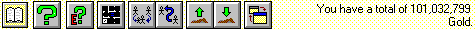
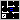
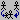
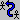
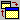

The Toolbar

Depending on the page mode, the Toolbar is a collection of icons that allow the player to carry out commands at the click of a button, or a display of character information. Below is a list of the command options from left to right:
Page
Clicking this button will switch the toolbar between two display modes (or pages), being either the icon (command) page, or the info (resistances) page.
Help
Selecting this will load the Mordor Helplesson and display the table of contents.
Guild Experience Information
This will display the current characters experience and quest information.
This functions the same as pressing F5

Selecting this will display (or set focus to) the Automap.
This functions the same as pressing F8

Use this command to ask other characters to join you.
This functions the same as pressing 'a'.

Use this command to give items to other characters within a party.
This functions the same as pressing 'g'.
Pickup Body
Select this option to pick up another characters dead body.
This functions the same as pressing 'p'.
Drop Body
Selecting this option will cause the current character to drop whatever they are carrying (being either the body of a companion or another character).
This functions the same as pressing 'l'.

This will bring up the Control Panel for the Character.
This functions the same as pressing F10.
The right hand side of the toolbar is used to display general information for when a character is either in the City or the Dungeon.
If desired, the Toolbar can be turned off in the Options Window either from the Main Menu, or the Character Control Panel.
Move to the next section to read about the City.
Move to the previous section to read about the Game Screen.
M1: "The Depths of Dejenol" is a Trademark of Decklin's Domain Ltd and is © Copyright 1994-2026 All Rights Reserved